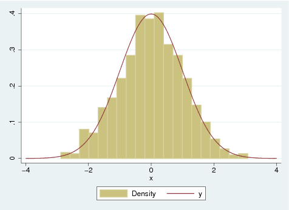
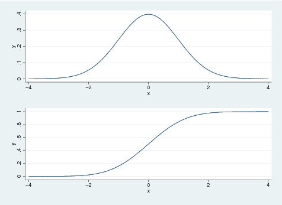
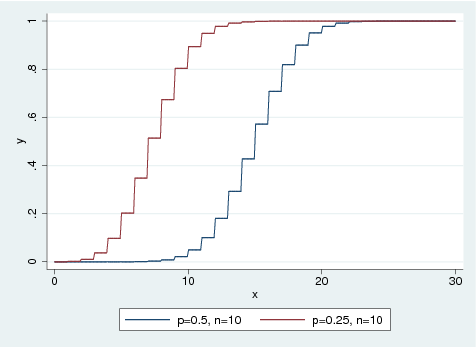

Home works for PH207x Health in Numbers
Table of Contents
Basics
di "hello world"
hello world
Use macro definition
local N = 41 di `N'+1
42
Display result with two decimal points
di "Result: " %8.2f -100/3
Result: -33.33
quietly suppresses output for the duration of command
quietly set obs 5 gen x = _n describe
Contains data
obs: 5
vars: 1
size: 20
-------------------------------------------------------------------------------
storage display value
variable name type format label variable label
-------------------------------------------------------------------------------
x float %9.0g
-------------------------------------------------------------------------------
Sorted by:
Note: dataset has changed since last saved
One can use r(...) or e(...) to get output from stata commands
quietly {
set obs 5
gen x = _n
summarize x
}
di "mean: " r(mean)
di "std: " r(sd)
mean: 3 std: 1.5811388
Multi-line command
di /// "test"
test
Produce scatter plot
set obs 7 gen x = _n gen y = x^2 graph scatter y x

Plot a function
twoway function sin(x), range(0 10)

Plot two functions
local rng range(-12 12) twoway (function sin(x), `rng') (function cos(x), `rng')
Bar Charts
local nobs = 10 set obs `nobs' generate x = _n gen lev = 1 if _n<=`nobs'/2 replace lev = 0 if _n>`nobs'/2 graph bar x, over(lev)

Histogram
set obs 1000 generate x = rnormal() twoway (histogram x, bin(20)) (function normalden(x), range(-4 4))

Box plot
set obs 10 generate x = _n generate y = _n + 1 graph box x y

Horizontal box plot
set obs 10 generate x = _n generate y = _n + 1 graph box x y, horizontal

Combining separate graphs into one graph
set obs 10 generate x = _n generate y = _n + 1 twoway (function normalden(x), range(-4 4)), name(f1) twoway (function normal(x), range(-4 4)), name(f2) graph combine f1 f2, row(2)

Calculus
linear regression
I derive a formula for linear regression.
infeval: true; declare (nounify(sum), linear); /* the sum of squares of residues */ F: sum((al + be*x[i] - y[i])^2, i, 1, N); /* derivatives must be zero */ eq1: fullratsimp(diff(F, al)); eq2: fullratsimp(diff(F, be)); /* solve the system of equation */ sol_be: solve( [eq1, eq2], [al, be])[1]; be_maxima: assoc(be, sol_be); /* solve the first equation to get alpha*/ sol_al: solve(eq1, al); al_maxima: assoc(al, sol_al); /* definitions to make it look like in the textbook */ env: [x[i]=xav+dx[i], y[i]=yav+dy[i], sum(dx[i], i, 1, N)=0, sum(dy[i], i, 1, N)=0, sum(x[i], i, 1, N)=xav*N, sum(y[i], i, 1, N)=yav*N]; be_simp: ev(ratsimp(be_maxima), env); al_simp: ev(ratsimp(al_maxima), env); print("beta: ", be_simp, " alpha: ", al_simp);
N
====
\
> dx dy
/ i i
====
i = 1
beta: ------------- alpha: yav - be xav
N
====
\ 2
> dx
/ i
====
i = 1
Probability distribution functions
normal
twoway function normalden(x, 0, 1), range(-4 4) ytitle("pr. density of normal distr.")

binomial
Plot binomial distribution: probability of observing n ore fewer successes then probability of one successes is p.
twoway (function binomial(30, x, 0.5), range(0 30)) /// (function binomial(30, x, 0.25), range(0 30)), /// legend( label(1 "p=0.5, n=10") label(2 "p=0.25, n=10") )

student
twoway (function tden(2, x), range(-10 10)) /// (function tden(10, x), range(-10 10)), /// legend( label(1 "n=2") label(2 "n=10")) /// ytitle("t-distribution")

Stata commands
ttest
Mean-comparison tests
set obs 100 gen x = rnormal() sum x ttest x == 0
obs was 0, now 100
Variable | Obs Mean Std. Dev. Min Max
-------------+--------------------------------------------------------
x | 100 .0006276 1.061928 -2.885089 1.837664
One-sample t test
------------------------------------------------------------------------------
Variable | Obs Mean Std. Err. Std. Dev. [95% Conf. Interval]
---------+--------------------------------------------------------------------
x | 100 .0006276 .1061928 1.061928 -.210082 .2113372
------------------------------------------------------------------------------
mean = mean(x) t = 0.0059
Ho: mean = 0 degrees of freedom = 99
Ha: mean < 0 Ha: mean != 0 Ha: mean > 0
Pr(T < t) = 0.5024 Pr(|T| > |t|) = 0.9953 Pr(T > t) = 0.4976
set obs 20 gen x = rnormal(1.0) gen y = rnormal(1.5) ttest x == y
obs was 0, now 20
Paired t test
------------------------------------------------------------------------------
Variable | Obs Mean Std. Err. Std. Dev. [95% Conf. Interval]
---------+--------------------------------------------------------------------
x | 20 .6278007 .2067612 .9246643 .1950445 1.060557
y | 20 1.529019 .2938401 1.314093 .9140044 2.144033
---------+--------------------------------------------------------------------
diff | 20 -.901218 .3177534 1.421036 -1.566283 -.2361526
------------------------------------------------------------------------------
mean(diff) = mean(x - y) t = -2.8362
Ho: mean(diff) = 0 degrees of freedom = 19
Ha: mean(diff) < 0 Ha: mean(diff) != 0 Ha: mean(diff) > 0
Pr(T < t) = 0.0053 Pr(|T| > |t|) = 0.0106 Pr(T > t) = 0.9947
With group variable
local nobs = 1000 set obs `nobs' gen lev = 1 if _n<=`nobs'/2 replace lev = 0 if _n>`nobs'/2 gen x = rnormal(1) if lev==0 replace x = rnormal(2) if lev==1 graph box x, by(lev)

Immediate form of one-sample mean-comparison test
local obs = 20 local mean = 1.0 local sd = 1.5 local val = 1.8 ttesti `obs' `mean' `sd' `val'
One-sample t test
------------------------------------------------------------------------------
| Obs Mean Std. Err. Std. Dev. [95% Conf. Interval]
---------+--------------------------------------------------------------------
x | 20 1 .3354102 1.5 .2979784 1.702022
------------------------------------------------------------------------------
mean = mean(x) t = -2.3851
Ho: mean = 1.8 degrees of freedom = 19
Ha: mean < 1.8 Ha: mean != 1.8 Ha: mean > 1.8
Pr(T < t) = 0.0138 Pr(|T| > |t|) = 0.0276 Pr(T > t) = 0.9862
samsi
Sample size and power for means and proportions
sampsi 0.2 0.4
Estimated sample size for two-sample comparison of proportions
Test Ho: p1 = p2, where p1 is the proportion in population 1
and p2 is the proportion in population 2
Assumptions:
alpha = 0.0500 (two-sided)
power = 0.9000
p1 = 0.2000
p2 = 0.4000
n2/n1 = 1.00
Estimated required sample sizes:
n1 = 119
n2 = 119
signtest
Sign test of matched pairs
quietly {
set obs 20
gen x = rnormal()
gen y = x + 1.0 + rnormal()
}
signtest x=y
Sign test
sign | observed expected
-------------+------------------------
positive | 5 10
negative | 15 10
zero | 0 0
-------------+------------------------
all | 20 20
One-sided tests:
Ho: median of x - y = 0 vs.
Ha: median of x - y > 0
Pr(#positive >= 5) =
Binomial(n = 20, x >= 5, p = 0.5) = 0.9941
Ho: median of x - y = 0 vs.
Ha: median of x - y < 0
Pr(#negative >= 15) =
Binomial(n = 20, x >= 15, p = 0.5) = 0.0207
Two-sided test:
Ho: median of x - y = 0 vs.
Ha: median of x - y != 0
Pr(#positive >= 15 or #negative >= 15) =
min(1, 2*Binomial(n = 20, x >= 15, p = 0.5)) = 0.0414
set obs 20 gen x = rnormal() gen y = 0.15 + rnormal() signrank x=y ttest x=y
obs was 0, now 20
Wilcoxon signed-rank test
sign | obs sum ranks expected
-------------+---------------------------------
positive | 7 63 105
negative | 13 147 105
zero | 0 0 0
-------------+---------------------------------
all | 20 210 210
unadjusted variance 717.50
adjustment for ties 0.00
adjustment for zeros 0.00
----------
adjusted variance 717.50
Ho: x = y
z = -1.568
Prob > |z| = 0.1169
Paired t test
------------------------------------------------------------------------------
Variable | Obs Mean Std. Err. Std. Dev. [95% Conf. Interval]
---------+--------------------------------------------------------------------
x | 20 -.3721993 .2067612 .9246643 -.8049555 .0605569
y | 20 .1790187 .2938401 1.314093 -.4359956 .7940331
---------+--------------------------------------------------------------------
diff | 20 -.551218 .3177534 1.421036 -1.216283 .1138474
------------------------------------------------------------------------------
mean(diff) = mean(x - y) t = -1.7347
Ho: mean(diff) = 0 degrees of freedom = 19
Ha: mean(diff) < 0 Ha: mean(diff) != 0 Ha: mean(diff) > 0
Pr(T < t) = 0.0495 Pr(|T| > |t|) = 0.0990 Pr(T > t) = 0.9505
signrank
Equality tests on matched data
lincom
lincom computes combinations of estimators (z, p-values etc.).
Construct a linear regression and use lincom
quietly set obs 10 gen x = _n gen y = x + 2*rnormal() quietly regress y x lincom 2*x
( 1) 2*x = 0
------------------------------------------------------------------------------
y | Coef. Std. Err. t P>|t| [95% Conf. Interval]
-------------+----------------------------------------------------------------
(1) | 1.856045 .5219802 3.56 0.007 .6523569 3.059734
------------------------------------------------------------------------------
Tutorial 10
- Step 1
Calculate the Pearson correlation for the percent of patients who say their nurse always communicated well (nursealways) and the percent of patients who would always recommend the hospital (recommendyes).use datasets/hospitaldata.74f90a09d4da.dta pwcorr recommendyes nursealways, sig| recomm~s nursea~s -------------+------------------ recommendyes | 1.0000 | | nursealways | 0.6580 1.0000 | 0.0000 |
- Step 2
Now that you have established that these variables are correlated, you decide to fit a linear regression model to assess the relationship between recommendyes and nursealways. State your model.\(Y_i\) = percent of patients who always recommend the hospital
\(X_i\) = perecnt of patients who say that the nurse always communicates well
\begin{equation} Y_i = \alpha + \beta X_i + \epsilon_i \end{equation}where \(\epsilon_i \propto N(0, \sigma^2)\). Goal is to estimate and obtain measures of uncertainty for \(\alpha\) and \(\beta\). We use the method of least squares for estimation.
- Step 3
Construct a scatter plot with nursealways on the x-axis and recommendyes on the y axis. Use the scatterplot to evaluate the assumptions of simple linear regression. Assumptions:- Independent observations
- \(Y|X\) is normally distributed
- Homoscedasticity (constant variance)
- Linearity
use datasets/hospitaldata.74f90a09d4da.dta twoway (scatter recommendyes nursealways)
- Step 4
Fit the linear regression model. Provide estimates, confidence intervals, and interpreta- tions of the regression coefficients $α and \(\beta\).use datasets/hospitaldata.74f90a09d4da.dta regress recommendyes nursealwaysSource | SS df MS Number of obs = 3570 -------------+------------------------------ F( 1, 3568) = 2723.72 Model | 144368.851 1 144368.851 Prob > F = 0.0000 Residual | 189118.972 3568 53.0041962 R-squared = 0.4329 -------------+------------------------------ Adj R-squared = 0.4327 Total | 333487.823 3569 93.4401297 Root MSE = 7.2804 ------------------------------------------------------------------------------ recommendyes | Coef. Std. Err. t P>|t| [95% Conf. Interval] -------------+---------------------------------------------------------------- nursealways | 1.159487 .0222169 52.19 0.000 1.115928 1.203046 _cons | -19.21559 1.712829 -11.22 0.000 -22.57381 -15.85737 ------------------------------------------------------------------------------
- Step 7
Examine a residual plot. Using \(R^2\) and the plot, does the model appear to fit well? (Are there any outliers?)use datasets/hospitaldata.74f90a09d4da.dta regress recommendyes nursealways rvfplot
- Step 8
Using the regression line, predict the expected percent of patients who always recommend the hospital when the reported percent of nurses who always communicate well is 80%? Construct corresponding 95% confidence interval.use datasets/hospitaldata.74f90a09d4da.dta regress recommendyes nursealways lincom _cons + 80*nursealwaysSource | SS df MS Number of obs = 3570 -------------+------------------------------ F( 1, 3568) = 2723.72 Model | 144368.851 1 144368.851 Prob > F = 0.0000 Residual | 189118.972 3568 53.0041962 R-squared = 0.4329 -------------+------------------------------ Adj R-squared = 0.4327 Total | 333487.823 3569 93.4401297 Root MSE = 7.2804 ------------------------------------------------------------------------------ recommendyes | Coef. Std. Err. t P>|t| [95% Conf. Interval] -------------+---------------------------------------------------------------- nursealways | 1.159487 .0222169 52.19 0.000 1.115928 1.203046 _cons | -19.21559 1.712829 -11.22 0.000 -22.57381 -15.85737 ------------------------------------------------------------------------------ ( 1) 80*nursealways + _cons = 0 ------------------------------------------------------------------------------ recommendyes | Coef. Std. Err. t P>|t| [95% Conf. Interval] -------------+---------------------------------------------------------------- (1) | 73.54339 .1399631 525.45 0.000 73.26897 73.8178 ------------------------------------------------------------------------------
- Step 9
For a new hospital with 80% of patients reporting that nurses always communicate well, predict the percent of patients who will always recommend the hospital. Construct corresponding 95% confidence interval.di %8.2f 73.54339 - invttail(3568, 0.025)*7.281745
59.27
Tutorial 11
use datasets/chis_healthdisparities.e85b34e4c45a.dta gen nopov = 1-poverty logit doctor nopov lincom nopov, eform
Iteration 0: log likelihood = -247.4035
Iteration 1: log likelihood = -245.14765
Iteration 2: log likelihood = -245.08244
Iteration 3: log likelihood = -245.08242
Logistic regression Number of obs = 500
LR chi2(1) = 4.64
Prob > chi2 = 0.0312
Log likelihood = -245.08242 Pseudo R2 = 0.0094
------------------------------------------------------------------------------
doctor | Coef. Std. Err. z P>|z| [95% Conf. Interval]
-------------+----------------------------------------------------------------
nopov | .6713351 .3013476 2.23 0.026 .0807047 1.261965
_cons | .83975 .2745156 3.06 0.002 .3017093 1.377791
------------------------------------------------------------------------------
( 1) [doctor]nopov = 0
------------------------------------------------------------------------------
doctor | exp(b) Std. Err. z P>|z| [95% Conf. Interval]
-------------+----------------------------------------------------------------
(1) | 1.956848 .5896914 2.23 0.026 1.084051 3.532357
------------------------------------------------------------------------------
Home Work 2
BMI and CHD prevalence
- Q1
What is the prevalence of obesity among the 4415 participants at the 1956 exam?
- Q2
What is the prevalence of CHD at the 1956 exam among the 4415 participants at the 1956 exam?
- Q3
What is the prevalence of CHD at the 1956 exam for each of the body mass index classes?use datasets/fhs.2d92301d751b.dta quietly { gen bmi1_cat=. replace bmi1_cat=1 if (bmi1<18.5) replace bmi1_cat=2 if (bmi1>=18.5 & bmi1<25) replace bmi1_cat=3 if (bmi1>=25 & bmi1<=30) replace bmi1_cat=4 if (bmi1>30) } tab bmi1_cat prevchd1, missing matcell(table)
| Prevalent coronary | heart disease, exam 1 bmi1_cat | No Yes | Total -----------+----------------------+---------- 1 | 57 0 | 57 2 | 1,870 66 | 1,936 3 | 1,758 90 | 1,848 4 | 555 38 | 593 -----------+----------------------+---------- Total | 4,240 194 | 4,434
Diabetes prevalence
- Q1
What is the prevalence of diabetes at the first exam (diabetes1=1)?use datasets/fhs.2d92301d751b.dta tab diabetes1Diabetic, | exam 1 | Freq. Percent Cum. ------------+----------------------------------- No | 4,313 97.27 97.27 Yes | 121 2.73 100.00 ------------+----------------------------------- Total | 4,434 100.00
- Q2
What is the prevalence of diabetes at the second exam (diabetes2=1)?use datasets/fhs.2d92301d751b.dta tab diabetes2Diabetic, | exam 2 | Freq. Percent Cum. ------------+----------------------------------- No | 3,775 96.06 96.06 Yes | 155 3.94 100.00 ------------+----------------------------------- Total | 3,930 100.00
- Q3
What is the prevalence of diabetes at the third exam (diabetes3=1)?use datasets/fhs.2d92301d751b.dta tab diabetes3Diabetic, | exam 3 | Freq. Percent Cum. ------------+----------------------------------- No | 3,009 92.22 92.22 Yes | 254 7.78 100.00 ------------+----------------------------------- Total | 3,263 100.00
Home Work 3
Probability and BMI
The following table uses data from the NHLBI teaching data set and displays the body mass index for 3,909 participants in the Framingham Heart Study with BMI measurements at the first two exams, in 1956 and in 1962.
Cardiac Hospitalizations in the US, 1991 and 1992
\begin{matrix} & \text{BMI} \leq 25, & \text{BMI} > 25, & \mathbf{Total} \\ & \text{exam 2} & \text{exam 2} & \\ \hline \mathrm{BMI} \leq 25, \text{exam 1} & 1,492 & 278 & 1,770 \\ \mathrm{BMI} > 25, \text{exam 1} & 249 & 1,890 & 2,139 \\ \text{Total} & 1,741 & 2,168 & 3,909 \\ \end{matrix}Assume a study participant has been randomly selected from this subset of 3,909 participants.
Define A as the event that this participant has a high BMI at exam 1.
Define B as the event that this participant has a high BMI at exam 2.
Define C as the event that this participant has a low BMI at exam 2.
Reproduce the table
use datasets/fhs.2d92301d751b.dta quietly { generate more1 = 0 if bmi1<=25 & !missing(bmi2) replace more1 = 1 if bmi1>25 & !missing(bmi2) generate more2 = 0 if bmi2<=25 & !missing(bmi1) replace more2 = 1 if bmi2>25 & !missing(bmi1) } tab more1 more2
| more2
more1 | 0 1 | Total
-----------+----------------------+----------
0 | 1,492 278 | 1,770
1 | 249 1,890 | 2,139
-----------+----------------------+----------
Total | 1,741 2,168 | 3,909
What is the probability of A?
What is the probability of B?
What is the probability of A and B?
Are A and B independent?
In a randomly selected participant, what is the probability that A and/or B occurs (namely, that the participant’s BMI is high during at least one of the first two exams)?
What is the probability that C occurs, given that A occurs?
What is the probability that C occurs, given that A occurs?
use datasets/fhs.2d92301d751b.dta quietly { generate more1 = 0 if bmi1<=25 & !missing(bmi2) replace more1 = 1 if bmi1>25 & !missing(bmi2) generate more2 = 0 if bmi2<=25 & !missing(bmi1) replace more2 = 1 if bmi2>25 & !missing(bmi1) } tab more1 more2, matcell(table) local ntot = table[1,1]+table[1,2]+table[2,1]+table[2,2] local PA = (table[2,1]+table[2,2])/`ntot' local PB = (table[1,2]+table[2,2])/`ntot' local PAandB = table[2,2]/`ntot' di "P(A): " %8.2f `PA' di "P(B): " %8.2f `PB' di "P(A&B): " %8.2f `PAandB' di "P(A||B): " %8.2f (table[1,2]+table[2,1]+table[2,2])/`ntot' di "P(A|B): " %8.2f (table[2,2])/(table[2,1]+table[2,2]) di "P(C|A): " %8.2f (table[2,1])/(table[2,1]+table[2,2]) if (`PAandB' == `PA'*`PB') { di "A and B are independent" } else { di "A and B are not independent" }
| more2
more1 | 0 1 | Total
-----------+----------------------+----------
0 | 1,492 278 | 1,770
1 | 249 1,890 | 2,139
-----------+----------------------+----------
Total | 1,741 2,168 | 3,909
P(A): 0.55
P(B): 0.55
P(A&B): 0.48
P(A||B): 0.62
P(A|B): 0.88
P(C|A): 0.12
A and B are not independent
Probability of age and smoking events
The following table uses data from the NHLBI teaching data set using the 4,434 participants in the Framingham Heart Study who attended the exam in 1956. Below, we show a table that contains the probabilities that a study participant falls into one of the eight categories defined by all possible combinations of the age categories and smoking status at the first exam in 1956. Recall that all study participants are between 30 and 70 years old.
Let A be the event that a randomly chosen study participant is a smoker at exam 1 in 1956. Let B be the event that the person chosen is between 60 and 70 years old at exam 1. Age and smoking at baseline in the Framingham cohort
\begin{matrix} \mathbf{Age} & \mathbf{Non-Smoker} & \mathbf{Smoker} \\ \hline 30-39 & 0.0519 & 0.0742 \\ 40-49 & 0.1554 & 0.2262 \\ 50-59 & 0.1809 & 0.1346 \\ 60-70 & 0.1200 & 0.0568 \\ \end{matrix}What is the probability of A.
What is the probability of \(B^C\)
What is the probability that a randomly selected individual is a non-smoker who is younger than 60 years old at exam 1?
Are the events A and B independent?
use datasets/fhs.2d92301d751b.dta quietly gen age_cat=. quietly replace age_cat=1 if (age1>=30) & (age1<=39) quietly replace age_cat=2 if (age1>=40) & (age1<=49) quietly replace age_cat=3 if (age1>=50) & (age1<=59) quietly replace age_cat=4 if (age1>=60) & (age1<=69) tabulate age_cat cursmoke1, cell nofreq matcell(table) local nsm = table[1,1]+table[2,1]+table[3,1]+table[4,1] local sm = table[1,2]+table[2,2]+table[3,2]+table[4,2] local tot = `sm' + `nsm' local b = table[4,1]-table[4,2] local PA = `sm'/`tot' local PB = `b'/`tot' local PAandB = table[4,2] di "P(A): " %8.2f `PA' di "P(B^C): " %8.2f 1-`PB' di "P(<60, non-smoker): " %8.2f (table[1,1]+table[2,1]+table[3,1])/`tot' if (`PAandB' == `PA'*`PB') { di "A and B are independent" } else { di "A and B are not independent" }
| Current smoker, exam
| 1
age_cat | No Yes | Total
-----------+----------------------+----------
1 | 5.19 7.42 | 12.61
2 | 15.55 22.63 | 38.18
3 | 18.10 13.47 | 31.57
4 | 11.96 5.69 | 17.64
-----------+----------------------+----------
Total | 50.79 49.21 | 100.00
P(A): 0.49
P(B^C): 0.94
P(<60, non-smoker): 0.39
A and B are not independent
Diagnostic Testing.
Screening for prostate cancer in men is a controversial topic. One of the most common screening mechanisms is the PSA test (prostate antigen test). In a meta-analysis, Mistry and Cable (2003) report that the sensitivity of the PSA test is 72.1% and the specificity is 93.2%. In the United States, it is estimated that 16.1% of men will have prostate cancer at some point in their life (America Cancer Society 2012). Assume that the prevalence of prostate cancer among men ages 75 and older is 16.1%. We examine the properties of the PSA screening test in men ages 75 and older, using the sensitivity and specificity values above. Mistry K. and Cable G. (2003). Meta-analysis of prostate-specific antigen and digital rectal examination as screening tests for prostate carcinoma. The Journal of the American Board of Family Practice, 16(2): 95-101.
I use maxima to do algebra. There are 4 mutually exclusive and
exhaustive groups: T+ and D+, T+ and D-, T- and D+, T- and D-. Denot
tp_dp, tp_dn, tn_dp, tn_dn the number of patients in each of
the groups. Sensitivity is defined as the probability of a positive
test result given that the individual has the disease:
tp_dp/(tp_dp+tn_dp). Specificity is the probability that tests
result is negative given that the individual does not have the
disease: tn_dn/(tp_dn+tn_dn).
assume_pos: true; vars: [tp_dp, tp_dn, tn_dp, tn_dn]; eq1: total = tp_dp + tp_dn + tn_dp + tn_dn; eq2: se = tp_dp/(tp_dp+tn_dp); eq3: sp = tn_dn/(tp_dn+tn_dn); eq4: pr = (tp_dp+tn_dp)/total; /* solve for the groups */ sol: solve([eq1, eq2, eq3, eq4], vars)[1]; /* get answers as formulas */ fn: ev(tn_dp/(tp_dp+tn_dp), sol); fp: ev(tp_dn/(tp_dn+tn_dn), sol); pc: ev(tp_dn/(tp_dp+tp_dn), sol); pd: ev(tn_dp/(tn_dp+tn_dn), sol); /* substitute numbers */ val: [se=0.721, sp=0.932, pr=0.161]; print("pr. of falce negative, P(T-|D+):", ev(fn, val)); print("pr. of falce positive, P(T+|D-):", ev(fp, val)); print("P(D-|T+): ", ev(pc, val)); print("P(D+|T-): ", ev(pd, val));
pr. of falce negative, P(T-|D+): 0.279 pr. of falce positive, P(T+|D-): .06799999999999999 P(D-|T+): .3295270110262052 P(D+|T-): .05432433511072519
Home Work 4
Titanic Survival Risk Ratios
The following table describes the survival status of passengers on the Titanic, stratified by Passenger Class (First, Second, or Third), Sex/Age (Child, Women, or Man), and Survival Status. The Frequency column indicates the number of passengers in each stratum. (For example there were 4 1st class women passengers who did not survive and 140 1st class women passengers who did survive). These data were obtained from the website anesi.com and refers to British Parliamentary Papers, Shipping. Casualties (Loss of the Steamship “Titanic”), 1912. cmd 6352 “Report of a Formal Investigation into the circumstances attending the foundering on the 15th April 1912 of the British Steamship “Titanic†of Liverpool after striking ice in or near Latitude 41 46 N., Longitude 50 14 W., North Atlantic Ocean, whereby loss of life ensued (London; His Majesty’s Stationary Office, 1912) page 42.
Titanic Survival Data by Passenger Class, Sex, and Age \begin{matrix} \mathbf{Passenger \space Class} & \mathbf{Age/Sex} & \mathbf{Survival \space Status} & \mathbf{Frequency} \\ \hline \mathrm{First} & \mathrm{Child} & \mathrm{Survived} & 6 \\ \mathrm{First} & \mathrm{Child} & \mathrm{Did \space not \space survive} & 0 \\ \mathrm{First} & \mathrm{Women} & \mathrm{Survived} & 140 \\ \mathrm{First} & \mathrm{Women} & \mathrm{Did \space not \space survive} & 4 \\ \mathrm{First} & \mathrm{Man} & \mathrm{Survived} & 57 \\ \mathrm{First} & \mathrm{Man} & \mathrm{Did \space not \space survive} & 118 \\ \mathrm{Second} & \mathrm{Child} & \mathrm{Survived} & 24 \\ \mathrm{Second} & \mathrm{Child} & \mathrm{Did \space not \space survive} & 0 \\ \mathrm{Second} & \mathrm{Women} & \mathrm{Survived} & 80 \\ \mathrm{Second} & \mathrm{Women} & \mathrm{Did \space not \space survive} & 13 \\ \mathrm{Second} & \mathrm{Man} & \mathrm{Survived} & 14 \\ \mathrm{Second} & \mathrm{Man} & \mathrm{Did \space not \space survive} & 154 \\ \mathrm{Third} & \mathrm{Child} & \mathrm{Survived} & 27 \\ \mathrm{Third} & \mathrm{Child} & \mathrm{Did \space not \space survive} & 52 \\ \mathrm{Third} & \mathrm{Women} & \mathrm{Survived} & 76 \\ \mathrm{Third} & \mathrm{Women} & \mathrm{Did \space not \space survive} & 89 \\ \mathrm{Third} & \mathrm{Man} & \mathrm{Survived} & 75 \\ \mathrm{Third} & \mathrm{Man} & \mathrm{Did \space not \space survive} & 387 \\ \end{matrix} To get table in stata I save it as tex file titanic.tex
\begin{matrix} \mathbf{Passenger \space Class} & \mathbf{Age/Sex} & \mathbf{Survival \space Status} & \mathbf{Frequency} \\ \hline \mathrm{First} & \mathrm{Child} & \mathrm{Survived} & 6 \\ \mathrm{First} & \mathrm{Child} & \mathrm{Did \space not \space survive} & 0 \\ \mathrm{First} & \mathrm{Women} & \mathrm{Survived} & 140 \\ \mathrm{First} & \mathrm{Women} & \mathrm{Did \space not \space survive} & 4 \\ \mathrm{First} & \mathrm{Man} & \mathrm{Survived} & 57 \\ \mathrm{First} & \mathrm{Man} & \mathrm{Did \space not \space survive} & 118 \\ \mathrm{Second} & \mathrm{Child} & \mathrm{Survived} & 24 \\ \mathrm{Second} & \mathrm{Child} & \mathrm{Did \space not \space survive} & 0 \\ \mathrm{Second} & \mathrm{Women} & \mathrm{Survived} & 80 \\ \mathrm{Second} & \mathrm{Women} & \mathrm{Did \space not \space survive} & 13 \\ \mathrm{Second} & \mathrm{Man} & \mathrm{Survived} & 14 \\ \mathrm{Second} & \mathrm{Man} & \mathrm{Did \space not \space survive} & 154 \\ \mathrm{Third} & \mathrm{Child} & \mathrm{Survived} & 27 \\ \mathrm{Third} & \mathrm{Child} & \mathrm{Did \space not \space survive} & 52 \\ \mathrm{Third} & \mathrm{Women} & \mathrm{Survived} & 76 \\ \mathrm{Third} & \mathrm{Women} & \mathrm{Did \space not \space survive} & 89 \\ \mathrm{Third} & \mathrm{Man} & \mathrm{Survived} & 75 \\ \mathrm{Third} & \mathrm{Man} & \mathrm{Did \space not \space survive} & 387 \\ \end{matrix}
and process it with the following shell command to generate csv data set
detex titanic.tex | \ awk 'NR>1&&NF>1' | \ awk -v FS='&' -v OFS="," '{n=NR==1?1:$4; NF=3; for (i=0; i<n; i++) print}' > datasets/titanic.csv
quietly insheet using "datasets/titanic.csv", names describe
unexpected end of file r(612); Contains data obs: 0 vars: 0 size: 0 Sorted by:
quietly {
insheet using "datasets/titanic.csv", names
gen woc = 1
replace woc = 0 if agesex=="Man"
gen sus = 0
replace sus = 1 if survivalstatus=="Survived"
}
Use these data to calculate the Risk Ratio for surviving comparing "women or children" as the exposed group and "all other passengers" as the non-exposed group.
Use these data to calculate the Risk Ratio for surviving comparing "women or children" as the exposed group and "all other passengers" as the non-exposed group for each passenger class.
quietly {
insheet using "datasets/titanic.csv", names
gen woc = 1
replace woc = 0 if agesex=="Man"
gen sus = 0
replace sus = 1 if survivalstatus=="Survived"
}
quietly cs sus woc
di "Combined: " %8.2f r(rr)
/// loop over all classes
levelsof passengerclass, local(pc)
foreach pc in `pc' {
quietly cs sus woc if passengerclass=="`pc'"
di "`pc'" " class: " %8.2f r(rr)
}
unexpected end of file r(612); variable sus not found r(111); Combined: . variable passengerclass not found r(111); 2. quietly cs sus woc if passengerclass=="`pc'" 3. di "`pc'" " class: " %8.2f r(rr) 4. }
Answer: 3.81 2.99 10.67 2.6
Risk Ratios, Odds Ratios, Rate Ratios for BMI, Death, and CHD
The following table displays categories of body mass index for the participants at the 1956 exam. (Note: 19 of the 4434 participants are excluded from this table because of missing data on bmi1.)
Show table
use datasets/fhs.2d92301d751b.dta /// I fitted this level to get the same table as in question quietly { gen bmi1_cat=. replace bmi1_cat=1 if (bmi1<18.5) & !missing(bmi1) replace bmi1_cat=2 if (bmi1>=18.5 & bmi1<25) & !missing(bmi1) replace bmi1_cat=3 if (bmi1>=25 & bmi1<30) & !missing(bmi1) replace bmi1_cat=4 if (bmi1>=30) & !missing(bmi1) } tab bmi1_cat
bmi1_cat | Freq. Percent Cum.
------------+-----------------------------------
1 | 57 1.29 1.29
2 | 1,936 43.85 45.14
3 | 1,845 41.79 86.93
4 | 577 13.07 100.00
------------+-----------------------------------
Total | 4,415 100.00
- Q1
Calculate the 24-year Risk Ratio for death comparing obese subjects (exposed group, n=577) to normal weight subjects (non-exposed group, n=1936).use datasets/fhs.2d92301d751b.dta /// I fitted this level to get the same table as in question quietly { gen bmi1_cat=. replace bmi1_cat=1 if (bmi1<18.5) & !missing(bmi1) replace bmi1_cat=2 if (bmi1>=18.5 & bmi1<25) & !missing(bmi1) replace bmi1_cat=3 if (bmi1>=25 & bmi1<30) & !missing(bmi1) replace bmi1_cat=4 if (bmi1>=30) & !missing(bmi1) } quietly gen obs = . quietly replace obs = 1 if bmi1_cat==4 quietly replace obs = 0 if bmi1_cat==2 cs death obs di "risk ratio: " %8.2f r(rr)
| obs | | Exposed Unexposed | Total -----------------+------------------------+------------ Cases | 259 571 | 830 Noncases | 318 1365 | 1683 -----------------+------------------------+------------ Total | 577 1936 | 2513 | | Risk | .4488735 .294938 | .3302825 | | | Point estimate | [95% Conf. Interval] |------------------------+------------------------ Risk difference | .1539355 | .1085524 .1993186 Risk ratio | 1.521925 | 1.358417 1.705113 Attr. frac. ex. | .3429373 | .2638491 .4135287 Attr. frac. pop | .107013 | +------------------------------------------------- chi2(1) = 47.62 Pr>chi2 = 0.0000 risk ratio: 1.52Answer: 1.52
- Q2
Calculate the 24-year Odds Ratio for death comparing obese subjects (exposed group, n=577) to normal weight subjects (non-exposed group, n=1936). quietlyuse datasets/fhs.2d92301d751b.dta /// I fitted this level to get the same table as in question quietly { gen bmi1_cat=. replace bmi1_cat=1 if (bmi1<18.5) & !missing(bmi1) replace bmi1_cat=2 if (bmi1>=18.5 & bmi1<25) & !missing(bmi1) replace bmi1_cat=3 if (bmi1>=25 & bmi1<30) & !missing(bmi1) replace bmi1_cat=4 if (bmi1>=30) & !missing(bmi1) } quietly gen obs = . quietly replace obs = 1 if bmi1_cat==4 quietly replace obs = 0 if bmi1_cat==2 cs death obs, or di "or: " %8.2f r(or)
| obs | | Exposed Unexposed | Total -----------------+------------------------+------------ Cases | 259 571 | 830 Noncases | 318 1365 | 1683 -----------------+------------------------+------------ Total | 577 1936 | 2513 | | Risk | .4488735 .294938 | .3302825 | | | Point estimate | [95% Conf. Interval] |------------------------+------------------------ Risk difference | .1539355 | .1085524 .1993186 Risk ratio | 1.521925 | 1.358417 1.705113 Attr. frac. ex. | .3429373 | .2638491 .4135287 Attr. frac. pop | .107013 | Odds ratio | 1.947015 | 1.608816 2.35632 (Cornfield) +------------------------------------------------- chi2(1) = 47.62 Pr>chi2 = 0.0000 or: 1.95Answer: 1.95
- Q3
Calculate the 24-year Rate Ratio for death comparing obese subjects (exposed group, n=577) to normal weight subjects (non-exposed group, n=1936).use datasets/fhs.2d92301d751b.dta /// I fitted this level to get the same table as in question quietly { gen bmi1_cat=. replace bmi1_cat=1 if (bmi1<18.5) & !missing(bmi1) replace bmi1_cat=2 if (bmi1>=18.5 & bmi1<25) & !missing(bmi1) replace bmi1_cat=3 if (bmi1>=25 & bmi1<30) & !missing(bmi1) replace bmi1_cat=4 if (bmi1>=30) & !missing(bmi1) } quietly gen obs = . quietly replace obs = 1 if bmi1_cat==4 quietly replace obs = 0 if bmi1_cat==2 ir death obs timedth di "irr: " %8.2f r(irr)
| obs | | Exposed Unexposed | Total -----------------+------------------------+------------ Death indicator | 259 571 | 830 Time [years] to | 11308.9 40708.74 | 52017.64 -----------------+------------------------+------------ | | Incidence rate | .0229023 .0140265 | .0159561 | | | Point estimate | [95% Conf. Interval] |------------------------+------------------------ Inc. rate diff. | .0088758 | .0058587 .011893 Inc. rate ratio | 1.632792 | 1.404331 1.894337 (exact) Attr. frac. ex. | .3875522 | .2879172 .4721108 (exact) Attr. frac. pop | .120935 | +------------------------------------------------- (midp) Pr(k>=259) = 0.0000 (exact) (midp) 2*Pr(k>=259) = 0.0000 (exact) irr: 1.63Answer: 1.63
- Q4
Calculate the 24-year Rate Ratio for developing coronary heart disease comparing obese subjects (exposed group) to normal weight (non-exposed group), excluding subjects with prevalent CHD at the 1956 exam.use datasets/fhs.2d92301d751b.dta /// I fitted this level to get the same table as in question quietly { gen bmi1_cat=. replace bmi1_cat=1 if (bmi1<18.5) & !missing(bmi1) replace bmi1_cat=2 if (bmi1>=18.5 & bmi1<25) & !missing(bmi1) replace bmi1_cat=3 if (bmi1>=25 & bmi1<30) & !missing(bmi1) replace bmi1_cat=4 if (bmi1>=30) & !missing(bmi1) } quietly gen obs = . quietly replace obs = 1 if bmi1_cat==4 quietly replace obs = 0 if bmi1_cat==2 ir anychd obs timechd if prevchd1==0 di "irr: " %8.2f r(irr)
| obs | | Exposed Unexposed | Total -----------------+------------------------+------------ Incident Hosp MI | 180 349 | 529 Time [years] to | 9387.737 37324.05 | 46711.79 -----------------+------------------------+------------ | | Incidence rate | .0191739 .0093505 | .0113248 | | | Point estimate | [95% Conf. Interval] |------------------------+------------------------ Inc. rate diff. | .0098234 | .0068555 .0127913 Inc. rate ratio | 2.050572 | 1.703396 2.46163 (exact) Attr. frac. ex. | .5123311 | .4129373 .593765 (exact) Attr. frac. pop | .1743282 | +------------------------------------------------- (midp) Pr(k>=180) = 0.0000 (exact) (midp) 2*Pr(k>=180) = 0.0000 (exact) irr: 2.05Answer: 2.05
- Q5
Calculate the 24-year Rate Ratio for developing coronary heart disease comparing (obese or overweight) subjects (exposed group) to normal weight (non-exposed group), excluding subjects with prevalent CHD at the 1956 exam.use datasets/fhs.2d92301d751b.dta /// I fitted this level to get the same table as in question quietly { gen bmi1_cat=. replace bmi1_cat=1 if (bmi1<18.5) & !missing(bmi1) replace bmi1_cat=2 if (bmi1>=18.5 & bmi1<25) & !missing(bmi1) replace bmi1_cat=3 if (bmi1>=25 & bmi1<30) & !missing(bmi1) replace bmi1_cat=4 if (bmi1>=30) & !missing(bmi1) } quietly gen obsoov = . quietly replace obsoov = 1 if bmi1_cat==4 | bmi1_cat==3 quietly replace obsoov = 0 if bmi1_cat==2 ir anychd obsoov timechd if prevchd1==0 di "irr: " %8.2f r(irr)
| obsoov | | Exposed Unexposed | Total -----------------+------------------------+------------ Incident Hosp MI | 686 349 | 1035 Time [years] to | 42251.22 37324.05 | 79575.28 -----------------+------------------------+------------ | | Incidence rate | .0162362 .0093505 | .0130066 | | | Point estimate | [95% Conf. Interval] |------------------------+------------------------ Inc. rate diff. | .0068857 | .0053241 .0084473 Inc. rate ratio | 1.736394 | 1.524219 1.980922 (exact) Attr. frac. ex. | .4240938 | .3439265 .4951846 (exact) Attr. frac. pop | .2810902 | +------------------------------------------------- (midp) Pr(k>=686) = 0.0000 (exact) (midp) 2*Pr(k>=686) = 0.0000 (exact) irr: 1.74Answer: 1.74
- Q6
Calculate the 24-year Rate Ratio for developing coronary heart disease comparing underweight subjects (exposed group) to normal weight (non-exposed group), excluding subjects with prevalent CHD at the 1956 exam.use datasets/fhs.2d92301d751b.dta /// I fitted this level to get the same table as in question quietly { gen bmi1_cat=. replace bmi1_cat=1 if (bmi1<18.5) & !missing(bmi1) replace bmi1_cat=2 if (bmi1>=18.5 & bmi1<25) & !missing(bmi1) replace bmi1_cat=3 if (bmi1>=25 & bmi1<30) & !missing(bmi1) replace bmi1_cat=4 if (bmi1>=30) & !missing(bmi1) } quietly gen underweight = . quietly replace underweight = 1 if bmi1_cat==1 quietly replace underweight = 0 if bmi1_cat==2 ir anychd underweight timechd if prevchd1==0 di "irr: " %8.2f r(irr)
| underweight | | Exposed Unexposed | Total -----------------+------------------------+------------ Incident Hosp MI | 6 349 | 355 Time [years] to | 1119.57 37324.05 | 38443.62 -----------------+------------------------+------------ | | Incidence rate | .0053592 .0093505 | .0092343 | | | Point estimate | [95% Conf. Interval] |------------------------+------------------------ Inc. rate diff. | -.0039913 | -.0083903 .0004076 Inc. rate ratio | .5731434 | .2089001 1.260145 (exact) Prev. frac. ex. | .4268566 | -.2601451 .7910999 (exact) Prev. frac. pop | .0124311 | +------------------------------------------------- (midp) Pr(k<=6) = 0.0798 (exact) (midp) 2*Pr(k<=6) = 0.1596 (exact) irr: 0.57Answer: 0.57
Home Work 5
Central Limit Theorem and Confidence Intervals
According to the WHO Global Database on Anaemia, the mean hemoglobin levels among primary school children in Delhi were estimated at \(\mu= 108\) g/L, with standard deviation \(\sigma=12.5\) g/L. (Source: http://who.int/vmnis/anaemia/data/database/countries/ind_ida.pdf)
Suppose we took a random sample of 75 primary school children in Delhi. Denote the mean hemoglobin levels in this sample as \(\bar{x}\). Throughout this question, assume that the sample size is large enough that the Central Limit Theorem is applicable and that \(\sigma\) is known.
- Q1
According to the Central Limit Theorem, what is the expected value (mean) of \(\bar{x}\)?Answer: 108
- Q2
According to the Central Limit Theorem, what is the standard deviation of \(\bar{x}\)?local sigma = 12.5 local N = 75 di "std: " %8.2f `sigma'/sqrt(`N')
std: 1.44
Answer: 1.44
local N = 75 local sigma = 12.5 local std = `sigma'/sqrt(`N') di "exp. mean of sample = mean of population: " 108 di "standard deviation of sample mean: " %8.2f `std'
exp. mean of sample = mean of population: 108 standard deviation of sample mean: 1.44
- Q3
Suppose we take a large number of samples of size 75. What proportion of the samples would we expect to have a sample mean \(\bar{x}\) that lies between 106 and 110 g/L?local N = 75 local mean = 108.0 local sigma = 12.5 local std = `sigma'/sqrt(`N') local z1 = (106 - `mean')/`std' local z2 = (110 - `mean')/`std' di "proportion: " %8.2f normal(`z2')-normal(`z1')
proportion: 0.83
Answer: 0.83
- Q4
Suppose instead we repeatedly took random samples of size 25. What proportion of the samples would we expect to have a sample mean that lies between 106 and 110 g/L?local N = 25 local mean = 108.0 local sigma = 12.5 local std = `sigma'/sqrt(`N') local z1 = (106 - `mean')/`std' local z2 = (110 - `mean')/`std' di "proportion: " %8.2f normal(`z2')-normal(`z1')
proportion: 0.58
Answer: 0.58
- Q5
Again, suppose we repeatedly took samples of size 75. What proportion of the samples would we expect to have a mean less than 103?local N = 75 local mean = 108 local sigma = 12.5 local std = `sigma'/sqrt(`N') local z1 = (103 - `mean')/`std' di "proportion: " %8.5f normal(`z1')
proportion: 0.00027
Answer: 0.000266
- Q6
If we repeatedly took samples of size 75, \(\bar{x}\) we would expect that, in 20% of the samples, would be greater than ___?local N = 75 local mean = 108.0 local sigma = 12.5 local std = `sigma'/sqrt(`N') local z1 = invnormal(1-0.2) di "20% of the samples is greater than " %8.2f `z1'*`std'+`mean'
20% of the samples is greater than 109.21
Answer: 109.21
- Q7
After taking a sample of size 75, we found that the sample mean was $\bar{x}$=103. Construct a 95% confidence interval for \(\mu\).local N = 75 local sigma = 12.5 local sample_mean = 103.0 local dM = 1.96*`sigma'/sqrt(`N') di "interval: " %8.2f `sample_mean'-`dM' " " %8.2f `sample_mean'+`dM'
interval: 100.17 105.83
Answer: 100.171 105.829
Hypothesis Testing with known Variance
Now, let's switch gears and assume that we didn't know the true population mean \(\mu\), and we only observed a sample of 25 school children in Delhi. Let's use the sample mean from this set of children to make inference about the true population mean \(\mu\).
For this question, assume that \(\sigma=12.5\) is known and that the sample size of 25 is large enough to use the Central Limit Theorem. So, for this question, we will base our inferences off of the normal distribution, not the t-distribution.
In this scenario, we can conduct a one-sample Z-test for inference about in a population with known variance \(\sigma^2\). To test \(H_0: \mu = \mu_0\), we can use the test statistic: \begin{equation} Z^* = \frac{\bar{x} - \mu_0}{\sigma/\sqrt{n}} \end{equation}
Under the null hypothesis, \(Z^* \sim N(0,1)\). So, we can use the standard normal distribution to calculate a p-value for this hypothesis test:
- For the one-sided test with alternative hypothesis \(H_a: \mu > \mu_0\), we can calculate a p-value using the formula \(p = P(Z > Z^*)\).
- For the one-sided test with alternative hypothesis \(H_a: \mu \le \mu_0\), we can calculate a p-value using the formula \(p = 2P(Z \le Z^*)\).
- For the two-sided test with alternative hypothesis \(H_a: \mu \neq \mu_0\), we can calculate a p-value using the formula \(p = 2P(Z \le -|Z^*|)\).
Note: there is no command for directly conducting this one-sample Z-test in Stata. However, you can use the normal function in Stata to calculate the p-values.
- Q1
In a sample of size 25, what is the value of the test statistic testing whether the mean hemoglobin level is equal to 108 g/L versus the alternative that it is not equal to 108 g/L, when \(\bar{x}=103\). Use a one-sample Z-test. What is the p-value corresponding to this two-sided hypothesis test?I use
ttestito get test statistics, but to get P value I use normal distribution.local N = 25 local mean = 103 local sd = 12.5 local val = 108 ttesti `N' `mean' `sd' `val' local z = r(t) di "test statistic: " `z' di "test statistic: " %8.4f 2*normal(`z')
One-sample t test ------------------------------------------------------------------------------ | Obs Mean Std. Err. Std. Dev. [95% Conf. Interval] ---------+-------------------------------------------------------------------- x | 25 103 2.5 12.5 97.84025 108.1597 ------------------------------------------------------------------------------ mean = mean(x) t = -2.0000 Ho: mean = 108 degrees of freedom = 24 Ha: mean < 108 Ha: mean != 108 Ha: mean > 108 Pr(T < t) = 0.0285 Pr(|T| > |t|) = 0.0569 Pr(T > t) = 0.9715 test statistic: -2 test statistic: 0.0455Answer: -2 0.0455
- Q2
In a sample of size 25, what is the value of the test statistic for testing whether the mean hemoglobin level in the population is equal to 108 g/L versus the alternative that it is less than 108 g/L, when \(\bar{x} = 103\). What is the p-value corresponding to this one-sided test?local N = 25 local mean = 103 local sd = 12.5 local val = 108 ttesti `N' `mean' `sd' `val' local z = r(t) di "test statistic: " `z' di "test statistic: " %8.4f normal(`z')
One-sample t test ------------------------------------------------------------------------------ | Obs Mean Std. Err. Std. Dev. [95% Conf. Interval] ---------+-------------------------------------------------------------------- x | 25 103 2.5 12.5 97.84025 108.1597 ------------------------------------------------------------------------------ mean = mean(x) t = -2.0000 Ho: mean = 108 degrees of freedom = 24 Ha: mean < 108 Ha: mean != 108 Ha: mean > 108 Pr(T < t) = 0.0285 Pr(|T| > |t|) = 0.0569 Pr(T > t) = 0.9715 test statistic: -2 test statistic: 0.0228Answer: -2 0.0228
- Q3
In a sample of size 25, what is the value of the test statistic for testing whether the mean hemoglobin level in the population is equal to 108 g/L versus the alternative that it is greater than 108 g/L, when \(\bar{x} = 103\). What is the p-value corresponding to this one-sided test?local N = 25 local mean = 103 local sd = 12.5 local val = 108 ttesti `N' `mean' `sd' `val' local z = r(t) di "test statistic: " `z' di "test statistic: " %8.4f 1-normal(`z')
One-sample t test ------------------------------------------------------------------------------ | Obs Mean Std. Err. Std. Dev. [95% Conf. Interval] ---------+-------------------------------------------------------------------- x | 25 103 2.5 12.5 97.84025 108.1597 ------------------------------------------------------------------------------ mean = mean(x) t = -2.0000 Ho: mean = 108 degrees of freedom = 24 Ha: mean < 108 Ha: mean != 108 Ha: mean > 108 Pr(T < t) = 0.0285 Pr(|T| > |t|) = 0.0569 Pr(T > t) = 0.9715 test statistic: -2 test statistic: 0.9772Answer: -2 0.9772
Confidence intervals and testing with unknown variance
Suppose now that we are interested in the distribution of hemoglobin levels in Mumbai. We decide that it is unreasonable to extrapolate the Delhi results to Mumbai, and therefore the population standard deviation is unknown. We take a random sample of 15 children in Mumbai. The sample mean is \(\bar{x}=115\) g/L, with sample standard deviation \(s=10.2\) g/L. Assume hemoglobin levels in Mumbai are normally distributed (we could check this by looking at the distribution of hemoglobin levels in other similar populations).
- Q1
Construct a two-sided 95% confidence interval for \(\mu\).
Home Work 6
Power and Sample Size
Power and Sample Size. Recall (from the previous problem set) that according to the WHO Global Database on Anaemia, the mean hemoglobin levels among primary school children in Delhi were estimated at \(\mu\) = 108 g/L, with standard deviation \(\sigma\) = 12.5 g/L. Suppose you decide to go and conduct your own study. You aim to test whether hemoglobin levels in Mumbai are similar to the estimates from Delhi. For your calculations, you assume that the standard deviation of hemoglobin levels in Mumbai is known and is equal to that in Delhi. We aim to test: \begin{equation} H0 : µM ≤ 108, HA : µM > 108 \end{equation} You plan to conduct this one-sided test at the \(\alpha\) = 0.05 level of signficance.
- Q3
If you randomly sample 30 children, what is the power of your test against the alternative \(\mu_M\) = 112?sampsi 108 112, sd1(12.5) n1(30) onesample onesided di "power: " r(power)
Estimated power for one-sample comparison of mean to hypothesized value Test Ho: m = 108, where m is the mean in the population Assumptions: alpha = 0.0500 (one-sided) alternative m = 112 sd = 12.5 sample size n = 30 Estimated power: power = 0.5429 power: .54294605
- Q4
If the true mean levels of hemoglobin were 115 g/L, how many children do you need to sample to have 80% power (assume the standard deviation remains the same as Delhi)?sampsi 108 115, sd1(12.5) power(.80) onesample onesided di "number of children: " r(N_1)
Estimated sample size for one-sample comparison of mean to hypothesized value Test Ho: m = 108, where m is the mean in the population Assumptions: alpha = 0.0500 (one-sided) power = 0.8000 alternative m = 115 sd = 12.5 Estimated required sample size: n = 20 number of children: 20
- Q5
If the true mean levels of hemoglobin were 112 g/L, how many children do you need to sample to restrict your type II error below 10%?sampsi 108 112, sd1(12.5) power(0.90) alpha(0.05) onesample onesided di "number of children: " r(N_1)
Estimated sample size for one-sample comparison of mean to hypothesized value Test Ho: m = 108, where m is the mean in the population Assumptions: alpha = 0.0500 (one-sided) power = 0.9000 alternative m = 112 sd = 12.5 Estimated required sample size: n = 84 number of children: 84
Two-Sample t-test
Schiff et al. (1990) investigated the effect of low doses of aspirin on women with mild pregnancy-induced hypertension. Forty-seven women hospitalized at 30-36 weeks’ gestation because of mild pregnancy-induced hypertension were treated by a daily dose of either 100 mg aspirin or placebo. The 23 women who received aspirin had a mean arterial blood pressure of 111 mm Hg with a standard deviation of 8 mm Hg. The 24 women who received placebo had a mean arterial blood pressure of 109 mm Hg and a standard deviation of 8 mm Hg.
Source: Schiff, E., Barkai,G., Ben-Baruch G., and Mashiach, S., "Low-Dose Aspirin Does Not Influence the Clinical Course of Women with Mild Pregnancy-Induced Hypertension," Obstetrics and Gynecology, Vol. 76, November 1990, 742-744.
- Q1
Conduct a two sample t-test with equal variances at \(\alpha = 0.05\) to test whether the population mean arterial blood pressure for women treated with aspirin is equal to the population mean arterial blood pressure for women treated with placebo. What is the value of the test statistic?
- Q2
How many degrees of freedom does your test statistic have?
- Q3
The p-value for this test is greater than 0.05. Based on this result can we conclude that the population mean arterial blood pressure for pregnant women treated with aspirin is equal to the population mean arterial blood pressure for pregnant women treated with placebo? A) Yes B) Nolocal obs1 = 23 local mean1 = 111 local sd1 = 8 local obs2 = 24 local mean2 = 109 local sd2 = 8 local level = 95 ttesti `obs1' `mean1' `sd1' `obs2' `mean2' `sd2', level(`level') di "the test statistic = " r(t) di "degrees of freedom = " r(df_t) di "two-sided p-value = " r(p) if r(p)>1-`level'/100 { di "We reject H0: mean(x)==mean(y)" } else { di "We cannot reject H0: mean(x)==mean(y)" }
Two-sample t test with equal variances ------------------------------------------------------------------------------ | Obs Mean Std. Err. Std. Dev. [95% Conf. Interval] ---------+-------------------------------------------------------------------- x | 23 111 1.668115 8 107.5405 114.4595 y | 24 109 1.632993 8 105.6219 112.3781 ---------+-------------------------------------------------------------------- combined | 47 109.9787 1.163542 7.97684 107.6366 112.3208 ---------+-------------------------------------------------------------------- diff | 2 2.334368 -2.701659 6.701659 ------------------------------------------------------------------------------ diff = mean(x) - mean(y) t = 0.8568 Ho: diff = 0 degrees of freedom = 45 Ha: diff < 0 Ha: diff != 0 Ha: diff > 0 Pr(T < t) = 0.8019 Pr(|T| > |t|) = 0.3961 Pr(T > t) = 0.1981 the test statistic = .85676283 degrees of freedom = 45 two-sided p-value = .39611566 We reject H0: mean(x)==mean(y)
Home Work 7
Inference for proportions
- Q1
Construct a 95% confidence interval for the proportion of infants experiencing the composite outcome in the fresh red blood cell group, using the following methods: exact binomial, Wilson normal approximation.
- Q2
Is the normal approximation to the binomial appropriate in this setting?I need the number of observations with fresh==1 and fresh==0use datasets/hw7.cb28cba7dca3.dta, clear ci outcome if fresh==1, binomial di r(mean) ci outcome if fresh==1, binomial wilson
-- Binomial Exact -- Variable | Obs Mean Std. Err. [95% Conf. Interval] -------------+--------------------------------------------------------------- outcome | 188 .5265957 .0364146 .4526364 .5997032 .52659574 ------ Wilson ------ Variable | Obs Mean Std. Err. [95% Conf. Interval] -------------+--------------------------------------------------------------- outcome | 188 .5265957 .0364146 .455408 .5967184
- Q3
Suppose you wanted to calculate a 95% confidence interval for infants experiencing intraventricular hemorrhage after receiving a fresh blood transfusion as well. Examine the table above. Is the Wilson confidence interval still appropriate?
- Q4
Estimate and construct a large-sample 95% confidence interval for the risk difference for experiencing the composite outcome for those with fresh blood versus the standard protocol blood. Calculate the risk difference as the estimated proportion in the fresh blood group minus estimated proportion in the standard blood group.use datasets/hw7.cb28cba7dca3.dta gen nfresh = 1-fresh prtest outcome, by (nfresh)
Two-sample test of proportions 0: Number of obs = 188 1: Number of obs = 189 ------------------------------------------------------------------------------ Variable | Mean Std. Err. z P>|z| [95% Conf. Interval] -------------+---------------------------------------------------------------- 0 | .5265957 .0364146 .4552244 .5979671 1 | .5291005 .036308 .4579382 .6002629 -------------+---------------------------------------------------------------- diff | -.0025048 .0514227 -.1032915 .0982819 | under Ho: .0514228 -0.05 0.961 ------------------------------------------------------------------------------ diff = prop(0) - prop(1) z = -0.0487 Ho: diff = 0 Ha: diff < 0 Ha: diff != 0 Ha: diff > 0 Pr(Z < z) = 0.4806 Pr(|Z| < |z|) = 0.9612 Pr(Z > z) = 0.5194
- Q5
Use a two-sample test of proportions to test whether there is a difference in the proportion of infants experiencing the composite outcome between fresh blood group and the standard protocol group at \(\alpha=0.05\) the level of significance.What is the value of the test statistic? What is the p-value?
use datasets/hw7.cb28cba7dca3.dta gen nfresh = 1-fresh prtest outcome, by (nfresh) local z = r(z) local P = 1 - (normal(abs(`z'))-normal(-abs(`z'))) di "==================== answers ====================" di "test statistic = " `z' di "Pr(|Z| < |z|) = " `P'
Two-sample test of proportions 0: Number of obs = 188 1: Number of obs = 189 ------------------------------------------------------------------------------ Variable | Mean Std. Err. z P>|z| [95% Conf. Interval] -------------+---------------------------------------------------------------- 0 | .5265957 .0364146 .4552244 .5979671 1 | .5291005 .036308 .4579382 .6002629 -------------+---------------------------------------------------------------- diff | -.0025048 .0514227 -.1032915 .0982819 | under Ho: .0514228 -0.05 0.961 ------------------------------------------------------------------------------ diff = prop(0) - prop(1) z = -0.0487 Ho: diff = 0 Ha: diff < 0 Ha: diff != 0 Ha: diff > 0 Pr(Z < z) = 0.4806 Pr(|Z| < |z|) = 0.9612 Pr(Z > z) = 0.5194 ==================== answers ==================== test statistic = -.04870957 Pr(|Z| < |z|) = .96115075
Contingency Tables
Continue using the Fergusson et al. (2012) clinical trial data to
complete the following questions. Again, use either the dataset from
the previous question, hw7.dta, or the study results in the table
below.
table is missing
- Q1
Estimate the odds ratio and a 95% confidence interval for experiencing the composite outcome for those in the fresh blood group versus standard protocol blood group.OR Estimate: 95% Confidence Interval:
use datasets/hw7.cb28cba7dca3.dta, clear cs outcome fresh, or woolf
| fresh | | Exposed Unexposed | Total -----------------+------------------------+------------ Cases | 99 100 | 199 Noncases | 89 89 | 178 -----------------+------------------------+------------ Total | 188 189 | 377 | | Risk | .5265957 .5291005 | .5278515 | | | Point estimate | [95% Conf. Interval] |------------------------+------------------------ Risk difference | -.0025048 | -.1032915 .0982819 Risk ratio | .995266 | .8222696 1.204659 Prev. frac. ex. | .004734 | -.2046588 .1777304 Prev. frac. pop | .0023607 | Odds ratio | .99 | .6607011 1.483424 (Woolf) +------------------------------------------------- chi2(1) = 0.00 Pr>chi2 = 0.9612
- Q2
Construct a 2x2 table for the composite outcome versus blood group. Are the expected cell counts large enough to conduct a Pearson Chi-square test?use datasets/hw7.cb28cba7dca3.dta, clear tabulate outcome fresh, row expected freq
+--------------------+ | Key | |--------------------| | frequency | | expected frequency | | row percentage | +--------------------+ | fresh outcome | 0 1 | Total -----------+----------------------+---------- 0 | 89 89 | 178 | 89.2 88.8 | 178.0 | 50.00 50.00 | 100.00 -----------+----------------------+---------- 1 | 100 99 | 199 | 99.8 99.2 | 199.0 | 50.25 49.75 | 100.00 -----------+----------------------+---------- Total | 189 188 | 377 | 189.0 188.0 | 377.0 | 50.13 49.87 | 100.00
- Q3
Using the Pearson chi-square test, determine if there is evidence of an association between blood group and the composite outcome at the level of significance. What is the value of the test statistic? Round your answer to two decimal places.use datasets/hw7.cb28cba7dca3.dta, clear tabulate outcome fresh, expected chi2
+--------------------+ | Key | |--------------------| | frequency | | expected frequency | +--------------------+ | fresh outcome | 0 1 | Total -----------+----------------------+---------- 0 | 89 89 | 178 | 89.2 88.8 | 178.0 -----------+----------------------+---------- 1 | 100 99 | 199 | 99.8 99.2 | 199.0 -----------+----------------------+---------- Total | 189 188 | 377 | 189.0 188.0 | 377.0 Pearson chi2(1) = 0.0024 Pr = 0.961
Final Thoughts on the Blood Transfusion Trial
- Q4
In this study, the authors state that they powered the study to detect an absolute difference of 15% in the two groups with 80% power, using a 2-sided test with . After a few more adjustments, their final sample size calculation was 450. Now suppose you want to replicate the study using a different population. Given that the authors did not find an association in their data, you decide to increase the power and decrease the difference detected between standard and fresh groups. Using an equal number of infants in both groups, what is the total sample size needed in order to achieve 90% power, assuming that the proportion of infants experiencing the composite outcome in the standard group was 55% and 45% in the fresh blood group (again, with ).sampsi .55 .45, alpha(0.05) power(0.90) di "total sample size: " r(N_1) + r(N_2)
Estimated sample size for two-sample comparison of proportions Test Ho: p1 = p2, where p1 is the proportion in population 1 and p2 is the proportion in population 2 Assumptions: alpha = 0.0500 (two-sided) power = 0.9000 p1 = 0.5500 p2 = 0.4500 n2/n1 = 1.00 Estimated required sample sizes: n1 = 544 n2 = 544 total sample size: 1088
Home Work 8
Survey Design
- Q1
Suppose you decided to randomly sample 1,700 people from the city of Boston (call this Design 1). For any given individual in South Dorchester, what is the probability of being selected in the survey? What is this probability for an individual in Harbor Islands?
- Q3
Now, you randomly sample 100 people within each neighborhood (Design 2). What is the probability of a random individual in South Dorchester being sampled? What is the probability of a randomly selected individual in Harbor Islands being sampled?
- Q8
Next, you decide you do not want to visit all 17 neighborhoods, so you randomly sample 10 neighborhoods. Within each sampled neighborhood selected, you randomly sample 170 people. Call this Design 4. What is the probability of a random individual in South Dorchester being included in the survey? What is the probability of a random individual in Harbor Islands being included in the survey?Content of boston.csv
neighborhood , pop South End , 34669 Central , 30901 Fenway - Kenmore , 40898 South Boston , 33688 Charlestown , 16439 Allston - Brighton , 74997 West Roxbury , 30445 Roxbury , 59790 East Boston , 40508 Jamaica Plain , 39897 Back Bay - Beacon Hill , 27476 Hyde Park , 31813 North Dorchester , 28384 South Dorchester , 59949 Roslindale , 32589 Mattapan , 34616 Harbor Islands , 535
quietly insheet using "datasets/boston.csv" local nsel_d1 = 1000 quietly sum pop di "P (design 1, both): " `nsel_d1'/r(mean) local nsel_d2 = 100 quietly sum pop if neighborhood=="South Dorchester" di "P (design 2, South Dorchester): " `nsel_d2'/r(mean) quietly sum pop if neighborhood=="Harbor Islands" di "P (design 2, Harbor Islands): " `nsel_d2'/r(mean) local nn_d4 = 10 local nsel_d4 = 170 quietly sum pop if neighborhood=="South Dorchester" di "P(design 2, South Dorchester): " `nsel_d4'/r(mean)*`nn_d4'/_N quietly sum pop if neighborhood=="Harbor Islands" di "P(design 2, Harbor Islands): " `nsel_d4'/r(mean)*`nn_d4'/_N
P (design 1, both): .02752617 P (design 2, South Dorchester): .00166808 P (design 2, Harbor Islands): .18691589 P(design 2, South Dorchester): .00166808 P(design 2, Harbor Islands): .18691589
Home Work 9
Trends in Unemployment
We again use publicly available data from the World Bank's website to examine national trends in unemployment percentages (percent unemployed in total labor force) in four countries: the United States, Great Britain, Japan, and Canada.
In this question, we examine unemployment trends over time using a correlation analysis, focusing primarily on the United States and Japan.
Use the dataset UnemploymentbyCountry.dta to answer the following questions.
- Q1
Calculate the Pearson and Spearman correlations between total unemployment and year for the United States and for Japan.use datasets/UnemploymentbyCountry.b41235ad3be6.dta pwcorr unemployedtotal year if country=="Japan" pwcorr unemployedtotal year if country=="United States"
(World Bank, World Dev. Indicators & Global Dev. Finance: Int. Labour Org) | unempl~l year -------------+------------------ unemployed~l | 1.0000 year | 0.8437 1.0000 | unempl~l year -------------+------------------ unemployed~l | 1.0000 year | -0.3415 1.0000use datasets/UnemploymentbyCountry.b41235ad3be6.dta spearman unemployedtotal year if country=="Japan" spearman unemployedtotal year if country=="United States"
(World Bank, World Dev. Indicators & Global Dev. Finance: Int. Labour Org) Number of obs = 31 Spearman's rho = 0.8162 Test of Ho: unemployedtotal and year are independent Prob > |t| = 0.0000 Number of obs = 31 Spearman's rho = -0.4517 Test of Ho: unemployedtotal and year are independent Prob > |t| = 0.0107
- Q2
Exclude all years after 2007 (recall that the financial collapse occurred in late 2008). Recalculate the correlations in question 1. (Hint: use an "if" command to restrict to certain years in Stata.)use datasets/UnemploymentbyCountry.b41235ad3be6.dta pwcorr unemployedtotal year if country=="Japan" && year<=2007 pwcorr unemployedtotal year if country=="United States" && year<=2007
(World Bank, World Dev. Indicators & Global Dev. Finance: Int. Labour Org) | unempl~l year -------------+------------------ unemployed~l | 1.0000 year | 0.8276 1.0000 | unempl~l year -------------+------------------ unemployed~l | 1.0000 year | -0.7557 1.0000use datasets/UnemploymentbyCountry.b41235ad3be6.dta spearman unemployedtotal year if country=="Japan" && year<=2007 spearman unemployedtotal year if country=="United States" && year<=2007
(World Bank, World Dev. Indicators & Global Dev. Finance: Int. Labour Org) Number of obs = 28 Spearman's rho = 0.7998 Test of Ho: unemployedtotal and year are independent Prob > |t| = 0.0000 Number of obs = 28 Spearman's rho = -0.7733 Test of Ho: unemployedtotal and year are independent Prob > |t| = 0.0000
- Q3
Construct a scatter plot with year on the x-axis and with both unemployment in the United States and unemployment in Japan on the y-axis. (Hint: try plotting different symbols for the United States and Japan by creating two different plots within the Twoway graphs window; restrict to a specific country by using an "if" statement within each plot window).use datasets/UnemploymentbyCountry.b41235ad3be6.dta twoway (scatter unemployedtotal year if country=="Japan") /// (scatter unemployedtotal year if country=="United States"), /// legend( label(1 "Japan") label(2 "United States") )

Nonparametric Tests
- Q2
Suppose you are conducting a two-sided sign test. You have data from 8 paired samples, and you observe 1 positive sign and 7 negative signs. What is the p-value corresponding to the null hypothesis that there is no difference in median between the two groups?quietly set obs 8 quietly generate s1 = 1 quietly replace s1 = -1 if _n == 8 quietly generate s2 = 0 signtest s1=s2
Sign test sign | observed expected -------------+------------------------ positive | 7 4 negative | 1 4 zero | 0 0 -------------+------------------------ all | 8 8 One-sided tests: Ho: median of s1 - s2 = 0 vs. Ha: median of s1 - s2 > 0 Pr(#positive >= 7) = Binomial(n = 8, x >= 7, p = 0.5) = 0.0352 Ho: median of s1 - s2 = 0 vs. Ha: median of s1 - s2 < 0 Pr(#negative >= 1) = Binomial(n = 8, x >= 1, p = 0.5) = 0.9961 Two-sided test: Ho: median of s1 - s2 = 0 vs. Ha: median of s1 - s2 != 0 Pr(#positive >= 7 or #negative >= 7) = min(1, 2*Binomial(n = 8, x >= 7, p = 0.5)) = 0.0703Using formula
di 2*(1-binomial(8, 6, 0.5))
.0703125
Answer: 0.0703
- Q3
Walker et al. (1987) examined the characteristics of children dying from sudden infant death syndrome. The sids.dta contains the age at death (in days) for a sample of 12 girls and 17 boys. Using an appropriate non-parametric test with a 0.05 level of significance, test whether the median age at death is the same for boys and girls. Be sure to verify the assumptions of your test.use datasets/sids910.865dbf143262.dta ranksum Age, by(Sex)
Two-sample Wilcoxon rank-sum (Mann-Whitney) test Sex | obs rank sum expected -------------+--------------------------------- Girl | 12 179 180 Boy | 17 256 255 -------------+--------------------------------- combined | 29 435 435 unadjusted variance 510.00 adjustment for ties -0.50 ---------- adjusted variance 509.50 Ho: Age(Sex==Girl) = Age(Sex==Boy) z = -0.044 Prob > |z| = 0.9647What is the absolute value of your test statistic?
Answer: 0.044
What is your p-value?
Answer: 0.9647
Obesity and Rate of Stroke
In the Framingham dataset that can be downloaded from the course website, we would like to examine the association between obesity and the rate of stroke. Since people with hypertension may have a higher body mass index and they are also at greater risk of a stroke, you may be concerned about confounding by hypertension.
- Q1
Use the Framingham dataset and Stata to calculate the incidence rate ratio of stroke comparing obese participants (bmi1>=30) to all other participants. The variable for incident stroke in this dataset is “stroke†and number of years a person was followed for stroke is recorded in the “timestrk†variable in the NHLBI dataset.use datasets/fhs.2d92301d751b.dta quietly gen ob = 1 if bmi1>=30 quietly replace ob = 0 if bmi1<30 ir stroke ob timestrk
| ob | | Exposed Unexposed | Total -----------------+------------------------+------------ Incident Stroke | 85 330 | 415 Time [years] to | 11144.75 77530.79 | 88675.54 -----------------+------------------------+------------ | | Incidence rate | .0076269 .0042564 | .00468 | | | Point estimate | [95% Conf. Interval] |------------------------+------------------------ Inc. rate diff. | .0033705 | .0016854 .0050557 Inc. rate ratio | 1.79188 | 1.394785 2.280687 (exact) Attr. frac. ex. | .441927 | .2830436 .5615356 (exact) Attr. frac. pop | .0905152 | +------------------------------------------------- (midp) Pr(k>=85) = 0.0000 (exact) (midp) 2*Pr(k>=85) = 0.0000 (exact)Answer: 1.79188
- Q2
Using the Framingham dataset and Stata, what is the incidence rate ratio (round to two decimal points) of stroke among obese participants (bmi1>=30) compared to all other participants after adjusting for prevalent hypertension at visit 1 (prevhyp1)?use datasets/fhs.2d92301d751b.dta quietly gen ob = 1 if bmi1>=30 quietly replace ob = 0 if bmi1<30 ir stroke ob timestrk, by(prevhyp1)
Prevalent hypert | IRR [95% Conf. Interval] M-H Weight -----------------+------------------------------------------------- No | 1.484769 .8687724 2.403521 11.75885 (exact) Yes | 1.121565 .8335983 1.493098 44.64521 (exact) -----------------+------------------------------------------------- Crude | 1.79188 1.394785 2.280687 (exact) M-H combined | 1.197284 .939728 1.52543 ------------------------------------------------------------------- Test of homogeneity (M-H) chi2(1) = 0.99 Pr>chi2 = 0.3208Answer: 1.197284
Home Work 10
Simple Linear Regression
We use data from the Environmental Protection Agency (EPA) to track the BP oil spill in Louisiana between May and September 2010. The oil well exploded on April 20, 2010, was capped in July and was declared dead in September 2010. The oil spill killed wildlife in the Gulf of Mexico and posed a significant public health risk to clean-up workers and residents of the Gulf Coast (Solomon and Janssen 2010). The EPA monitored air quality and took samples of sediment to measure the impact of the oil spill. For more information from the EPA, visit http://www.epa.gov/bpspill/sediment.html#understanding.
*Solomon G., Janssen S. (2010). Health Effects of the Gulf Oil Spill. JAMA. (doi:10.1001/jama.2010.1254)
Use the dataset oilspill.dta to answer the following questions.
Simple Linear Regression. In this example, we track changes in the amount of nickel found in sediment along the Louisiana coast between May and September 2010 (note that there is no data from July). Nickel is a metal that is found in sediment contaminated with oil. We model the amount of nickel as a function of time (month) using linear regression.
Fit a linear regression model with nickel as the outcome and month as the explanatory variable. Using indicator variables, model month as a categorical covariate (i.e. for the variable "month", it is coded numerically as May = 5, June = 6, August = 8, September = 9). Call this Model 1.
Assume the assumptions of linear regression are met for this model. You can make histograms of nickel by month to visually verify that the data does not appear to be skewed or any other evidence that would suggest a violation of the assumptions necessary to analyze this data using linear regression.
- Q1
Does the amount of nickel in the soil tend to increase over the four month period?TODO: make a histogram plotuse datasets/oilspill.71f9665e3249.dta twoway (scatter nickel month) (lfit nickel month)
Answer: Yes
- Q2
Examine the regression coefficients. Compare how the average nickel amount changes by month. Is it reasonable to assume that average amount of nickel increases linearly by month?Answer: Yes
- Q3
Make a residual plot.use datasets/oilspill.71f9665e3249.dta xi: regress nickel i.month rvfplot

Is there any evidence of outliers? Is there any evidence of heteroscedasticity?
Answer: Yes Yes
- Q4
Now, assume the amount of nickel increases linearly by month, and the assumptions of linear regression continue to hold. Fit a model with nickel as the outcome and month modeled as a continuous explanatory variable. Call this Model 2.Using Model 2, it is estimated that, on average, nickel increases by ______ each month, from May to September.
use datasets/oilspill.71f9665e3249.dta quietly regress nickel month /// to extract coefficients from matrix mat beta=e(b) svmat double beta, names(matcol) di "nickel increases in one month by " betamonth[1]
nickel increases in one month by 1.642664
Answer: 1.642664
- Q5
What is the 95% confidence interval for the average increase in nickel each month?use datasets/oilspill.71f9665e3249.dta regress nickel monthSource | SS df MS Number of obs = 248 -------------+------------------------------ F( 1, 246) = 21.47 Model | 1535.60852 1 1535.60852 Prob > F = 0.0000 Residual | 17594.5323 246 71.5224891 R-squared = 0.0803 -------------+------------------------------ Adj R-squared = 0.0765 Total | 19130.1408 247 77.4499629 Root MSE = 8.4571 ------------------------------------------------------------------------------ nickel | Coef. Std. Err. t P>|t| [95% Conf. Interval] -------------+---------------------------------------------------------------- month | 1.642664 .3545111 4.63 0.000 .9443998 2.340928 _cons | 5.335122 2.646702 2.02 0.045 .1220335 10.54821 ------------------------------------------------------------------------------Answer: .9443998 2.340928
- Q6
Given that the relationship between month and nickel appears to be linear, is it reasonable to use Model 2 to predict the amount of nickel in the soil in July 2010?Answer: Yes
- Q7
Given that the relationship between month and nickel appears to be linear, is it reasonable to use Model 2 to predict the amount of nickel in the soil in October 2010?Answer: No
- Q8
What is the average amount of nickel in the soil during August 2010? According to model 1 (Hint: Think about how dummy/indicator variables are coded.). According to Model 1. According to Model 2use datasets/oilspill.71f9665e3249.dta quietly xi: regress nickel i.month quietly predict pnickel1 quietly sum pnickel1 if month==8 di "av. nickel in August (Model 1): " r(mean) quietly regress nickel month quietly predict pnickel2 quietly sum pnickel2 if month==8 di "av. nickel in August (Model 2): " r(mean)
av. nickel in August (Model 1): 17.962265 av. nickel in August (Model 2): 18.476433
Answer: 17.962263 18.476434
- Q9
True or False: Model 1 makes stronger modeling assumptions than Model 2.Answer: False
Multiple Linear Regression
Again, we model the amount of nickel found in the sediment. Now, we model nickel as a function of both time (month) and location (longitude). The Gulf Coast in Louisiana is somewhat horizontal, so for simplicity we will ignore latitude in this problem.
Fit a linear regression model with nickel as the outcome and with month and longitude as explanatory covariates. Model month as a continuous variable, as in Model 2 from the previous question. Call this Model 3. Assume the assumptions of linear regression hold.
- Q1
Compare the adjusted R-squared from Models 2 and 3. Does the addition of longitude improve the adjusted R-square?Answer: YES
- Q2
Test whether the coefficient for longitude in the model is equal to 0 at the 0.05 level of significance.use datasets/oilspill.71f9665e3249.dta regress nickel month longitude /// getting answers from command output mat beta=e(b) mat varcovar=e(V) svmat double beta, names(matcol) di "estimated coefficient: " betalongitude[1] di "degrees of freedom: " e(df_r)
Source | SS df MS Number of obs = 248 -------------+------------------------------ F( 2, 245) = 12.54 Model | 1776.53846 2 888.269231 Prob > F = 0.0000 Residual | 17353.6024 245 70.8310301 R-squared = 0.0929 -------------+------------------------------ Adj R-squared = 0.0855 Total | 19130.1408 247 77.4499629 Root MSE = 8.4161 ------------------------------------------------------------------------------ nickel | Coef. Std. Err. t P>|t| [95% Conf. Interval] -------------+---------------------------------------------------------------- month | 1.678598 .3533309 4.75 0.000 .9826447 2.374552 longitude | -.7402628 .4013769 -1.84 0.066 -1.530852 .0503267 _cons | -62.10854 36.66326 -1.69 0.092 -134.3239 10.10687 ------------------------------------------------------------------------------ estimated coefficient: -.74026284 degrees of freedom: 245What is the estimated coefficient?
Answer: -.7402628
The estimated standard error of the estimated coefficient?
Answer: .4013769
The estimate of the test statistic?
Answer: -1.84
The number of degrees of freedom of the distribution of the test statistic under the null hypothesis?
Answer: 245
The p-value?
Answer: 0.066
More Regression
- Q1
Examine the relationship between vanadium (another marker of oil in sediment) and nickel using a scatter plot. Does this relationship appear linear?use datasets/oilspill.71f9665e3249.dta scatter vanadium nickelAnswer: Yes
- Q2
How many outliers do you observe in this scatterplot?Answer: 3
- Q3
Fit a linear regression model with nickel as the outcome and vanadium as the explanatory covariate (Model 4). Use this model to answer questions 3 and 4.How much does nickel increase, on average, for a one mg/kg increase in vanadium?
use datasets/oilspill.71f9665e3249.dta quietly regress nickel vanadium /// to extract coefficients from matrix mat beta=e(b) svmat double beta, names(matcol) di "nickel increases by " betavanadium[1]
nickel increases by .4379549
Answer: .4379549
- Q4
How much does nickel increase, on average, for a 10 mg/kg increase in vanadium?use datasets/oilspill.71f9665e3249.dta quietly regress nickel vanadium /// to extract coefficients from matrix mat beta=e(b) svmat double beta, names(matcol) di "nickel increases by " 10*betavanadium[1] /// another way lincom 10*vanadium
nickel increases by 4.379549 ( 1) 10*vanadium = 0 ------------------------------------------------------------------------------ nickel | Coef. Std. Err. t P>|t| [95% Conf. Interval] -------------+---------------------------------------------------------------- (1) | 4.379549 .1613771 27.14 0.000 4.061692 4.697406 ------------------------------------------------------------------------------Answer 4.379549
High Blood Pressure and CHD Incidence
Use Stata and the NHLBI data set to create the two categories of high blood pressure (highbp1)
- Q1
What is the incidence rate ratio of stroke comparing those with high blood pressure to those without high blood pressure? Hint: The variable for stroke in the dataset is "stroke" and the number of years a person was followed for stroke is recorded in the "timestrk" variable.use datasets/fhs.2d92301d751b.dta quietly generate highbp1=. quietly replace highbp1=1 if (sysbp1>=140 | diabp1 >= 90) quietly replace highbp1=0 if (sysbp1<140 & diabp1<90) ir stroke highbp1 timestrk
| highbp1 | | Exposed Unexposed | Total -----------------+------------------------+------------ Incident Stroke | 255 160 | 415 Time [years] to | 28887.76 59787.78 | 88675.54 -----------------+------------------------+------------ | | Incidence rate | .0088273 .0026761 | .00468 | | | Point estimate | [95% Conf. Interval] |------------------------+------------------------ Inc. rate diff. | .0061511 | .0049911 .0073112 Inc. rate ratio | 3.298517 | 2.696321 4.045047 (exact) Attr. frac. ex. | .6968334 | .6291243 .7527841 (exact) Attr. frac. pop | .4281748 | +------------------------------------------------- (midp) Pr(k>=255) = 0.0000 (exact) (midp) 2*Pr(k>=255) = 0.0000 (exact)Answer: 3.298517
- Q2
What is the incidence rate ratio (rounded to two decimal points) for the association between high blood pressure (highbp1) and the rate of stroke among men? Hint: Use the variable (sex1).use datasets/fhs.2d92301d751b.dta quietly generate highbp1=. quietly replace highbp1=1 if (sysbp1>=140 | diabp1 >= 90) quietly replace highbp1=0 if (sysbp1<140 & diabp1<90) ir stroke highbp1 timestrk, by(sex1)
Sex, exam 1 | IRR [95% Conf. Interval] M-H Weight -----------------+------------------------------------------------- Male | 2.273711 1.697105 3.048007 29.75741 (exact) Female | 4.74629 3.537425 6.429301 21.94115 (exact) -----------------+------------------------------------------------- Crude | 3.298517 2.696321 4.045047 (exact) M-H combined | 3.323088 2.725029 4.052401 ------------------------------------------------------------------- Test of homogeneity (M-H) chi2(1) = 12.84 Pr>chi2 = 0.0003Answer: 2.273711
- Q3
What is the incidence rate ratio (rounded to two decimal points) for the association between high blood pressure (highbp1) and the rate of stroke among women?use datasets/fhs.2d92301d751b.dta quietly generate highbp1=. quietly replace highbp1=1 if (sysbp1>=140 | diabp1 >= 90) quietly replace highbp1=0 if (sysbp1<140 & diabp1<90) ir stroke highbp1 timestrk, by(sex1)
Sex, exam 1 | IRR [95% Conf. Interval] M-H Weight -----------------+------------------------------------------------- Male | 2.273711 1.697105 3.048007 29.75741 (exact) Female | 4.74629 3.537425 6.429301 21.94115 (exact) -----------------+------------------------------------------------- Crude | 3.298517 2.696321 4.045047 (exact) M-H combined | 3.323088 2.725029 4.052401 ------------------------------------------------------------------- Test of homogeneity (M-H) chi2(1) = 12.84 Pr>chi2 = 0.0003Answer: 4.74629
- Q4
Conduct a test of homogeneity to evaluate whether the association between high blood pressure (highbp1) and the rate of stroke is different by sex. Based on this test, is there evidence that the difference between the sex-specific incidence rate ratios are more than just random sampling variability?